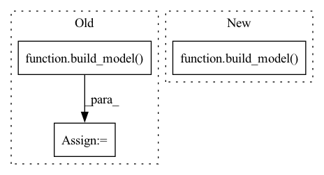

Pattern ID :36979
Before Change
// Record results
logger.info(hyperparams)
temp_model = build_model( args)
logger.info("num params: {:,}".format(param_count(temp_model)))
logger.info("{} +/- {} {}".format(mean_score, std_score, metric))
results[mean_score]After Change
mean_score, std_score = cross_validate(gs_args, TRAIN_LOGGER)
// Record results
temp_model = build_model( gs_args)
num_params = param_count(temp_model)
logger.info(hyperparams)
logger.info("num params: {:,}".format(num_params))
logger.info("{} +/- {} {}".format(mean_score, std_score, metric))In pattern: SUPERPATTERN
Frequency: 3
Non-data size: 3
Instances Fragment ID: 105232077
Project Name: aamini/chemprop
Commit Name: b221474e6942b2df892595d4043b55e6bec27262
Time: 2018-12-20
Author: swansonk.14@gmail.com
File Name: grid_search.py
M Class Name: AnonimousClass
N Class Name: AnonimousClass
M Method Name: grid_search(1)
N Method Name: grid_search(1)
M Parent Class:
N Parent Class:
M File Name: grid_search.py
N File Name: grid_search.py
M Start Line: 52
M End Line: 74
N Start Line: 40
N End Line: 84
Before Change
config = mmcv.Config.fromfile(os.path.join(os.path.dirname(__file__), config_name))
model = build_model( config.model)
mmcv.runner.load_checkpoint(model, model_path, strict=True)
model.to(device)
model.eval()
if fp16:After Change
scale = 4 if model < 3 else 1
model = build_model( cfg._cfg_dict)
mmcv.runner.load_checkpoint(model, model_path, strict=True)
model.to(device)
model.eval()
if fp16: Fragment ID: 105232079
Project Name: holywu/vs-basicvsrpp
Commit Name: 8667169fc93ed0476ab23ae9a0cf0188638bffaf
Time: 2021-10-03
Author: holywu@gmail.com
File Name: vsbasicvsrpp/__init__.py
M Class Name: AnonimousClass
N Class Name: AnonimousClass
M Method Name: BasicVSRPP(10)
N Method Name: BasicVSRPP(9)
M Parent Class:
N Parent Class:
M File Name: vsbasicvsrpp/__init__.py
N File Name: vsbasicvsrpp/__init__.py
M Start Line: 92
M End Line: 101
N Start Line: 17
N End Line: 107
Before Change
widen_factor=resnet_widen_factor)
elif arch_name == "slowfast":
cfg = load_config(args)
model = build_model( cfg)
return model
After Change
slowfast_cfg.DATA.CROP_SIZE = cfg.DATA.SAMPLE_SIZE
slowfast_cfg.DATA.INPUT_CHANNEL_NUM = [cfg.DATA.INPUT_CHANNEL_NUM, cfg.DATA.INPUT_CHANNEL_NUM]
model = build_model( slowfast_cfg)
return model
Fragment ID: 105232073
Project Name: rvl-lab-utoronto/video_similarity_search
Commit Name: 537da91309369c91eb499418b71a03aa86a4fc88
Time: 2020-07-07
Author: salar77h@gmail.com
File Name: models/model_utils.py
M Class Name: AnonimousClass
N Class Name: AnonimousClass
M Method Name: model_selector(1)
N Method Name: model_selector(2)
M Parent Class:
N Parent Class:
M File Name: models/model_utils.py
N File Name: models/model_utils.py
M Start Line: 19
M End Line: 31
N Start Line: 19
N End Line: 39